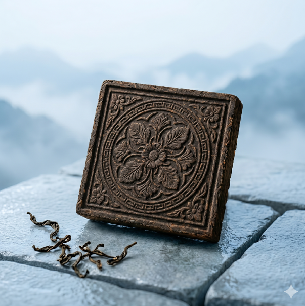
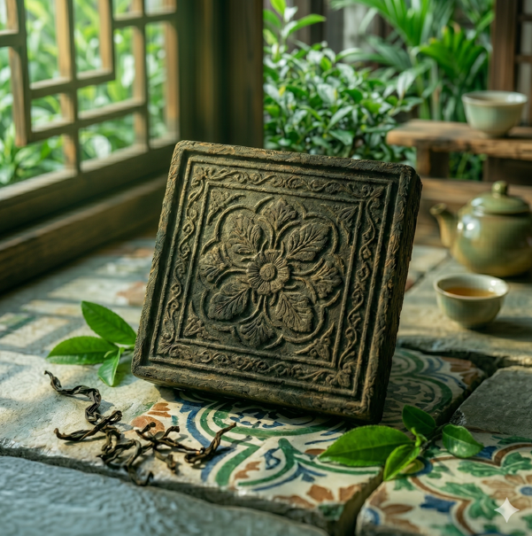
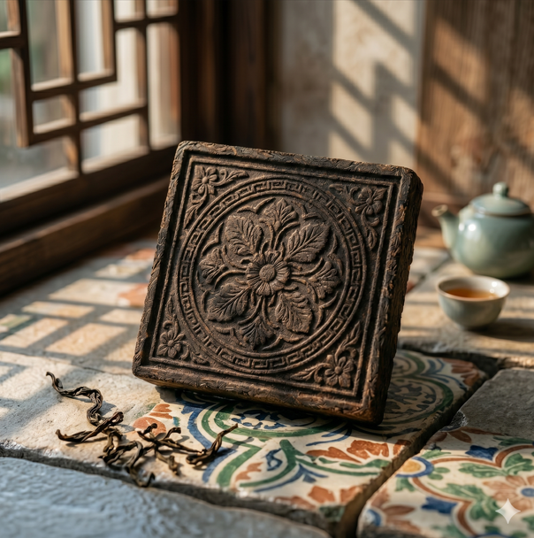

花磚圖騰轉化
取材自台灣老宅花磚紋樣，保留傳統幾何與植物圖案的文化意涵。
每一塊茶磚都承載著不同的花磚紋樣，透過沖泡的過程，讓茶香與圖騰意象一同展開，重新喚起關於台灣老宅與生活記憶的感受。
這不只是一款茶產品，而是一段可以被品嚐的文化記憶。
茶磚表面壓印不同花磚圖騰，搭配簡約包裝設計，使每一塊茶磚如同一片微型建築立面。
產品整體呈現介於茶品與工藝品之間的質感，強調文化與日常之間的連結。
保留花磚的層次與幾何之美，讓包裝本身成為生活中的文化符號。



台灣老宅中的花磚，曾經遍布於街屋、騎樓與住宅之中，是許多人共同的生活記憶。
它們不只是裝飾，而是一種時代的象徵，記錄著家庭、鄰里與城市的日常風景。
隨著都市更新與建築更迭，這些花磚逐漸消失於現代生活之中。
《磚茶》希望透過產品設計，將這些逐漸淡去的文化記憶重新帶回日常。
取材自台灣老宅花磚紋樣，保留傳統幾何與植物圖案的文化意涵。
以茶磚形式承載圖騰，使文化紋樣可被「使用」與「體驗」。
透過沖泡茶的日常行為，重新連結人與台灣老宅文化的記憶。
Email：hello@bricktea.com
Instagram：@bricktea
Location：Taiwan
我們相信，文化不只應該被保存，更應該被重新使用與感受。